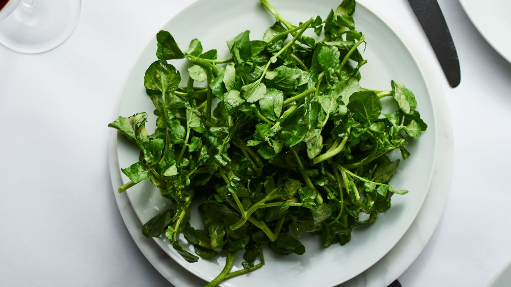

Ingredients:
- 2 bunches of watercress with tough stem trimmed
- 3 cloves of garlic finely grated
- 2 teaspoons of freshly ground pepper
- 2 tablespoons of olive oil
- 1/2 lemon
- 3 tablespoons of soy sauce
- 3 teaspoons of sugar
- 2 boiled eggs
- 1 avocado
- In a small bowl, mix the soy sauce, pepper, sugar, and 1/2 of the lemon squeezed into juice.
- On the stove, use a small skillet. Put the oil in and when it's hot, put in the minsced garlic. Stir it until the garlic starts turning brown. Turn off the stove. Put the garlic into the sauce mix.
- Wash the watercress. Put it on a plate and add the dressing on top. Slice up the boiled eggs and avocado and add them onto the salad.
|
 |